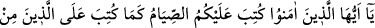
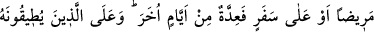
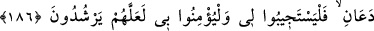
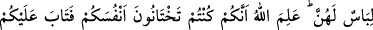
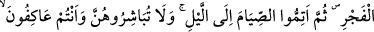

RAMAZAN VE ORUÇ
183. Ey îmân edenler! Oruç sizden önce gelip geçmiş ümmetlere farz kılındığı
gibi size de farz kılındı. Umulur ki korunursunuz.
184. Sayılı günlerde olmak üzere (oruç size farz kılındı). Sizden her kim hasta
yahut yolcu olursa (tutamadığı günler kadar) diğer günlerde kazâ eder. (İhtiyarlık
veya şifâ umudu kalmamış hastalık gibi devamlı mazereti olup da) oruç tutmaya
güçleri yetmeyenlere bir fakir doyumu kadar fidye gerekir. Bununla beraber kim
gönüllü olarak hayır yaparsa, bu kendisi için daha iyidir. Eğer bilirseniz (güçlüğüne
rağmen) oruç tutmanız sizin için daha hayırlıdır.
185. Ramazan ayı, insanlara yol gösterici, doğrunun ve doğruyu eğriden